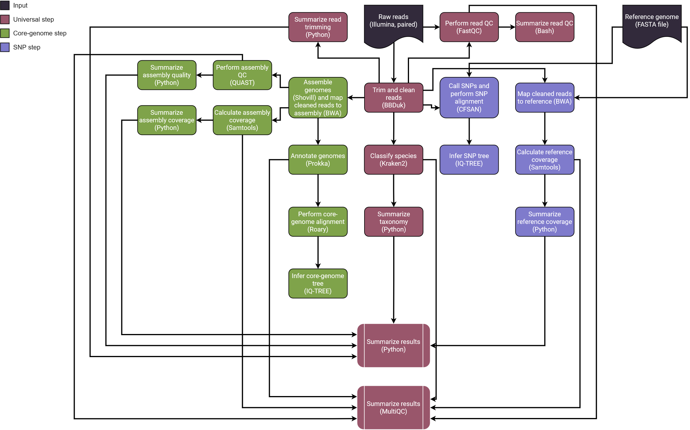
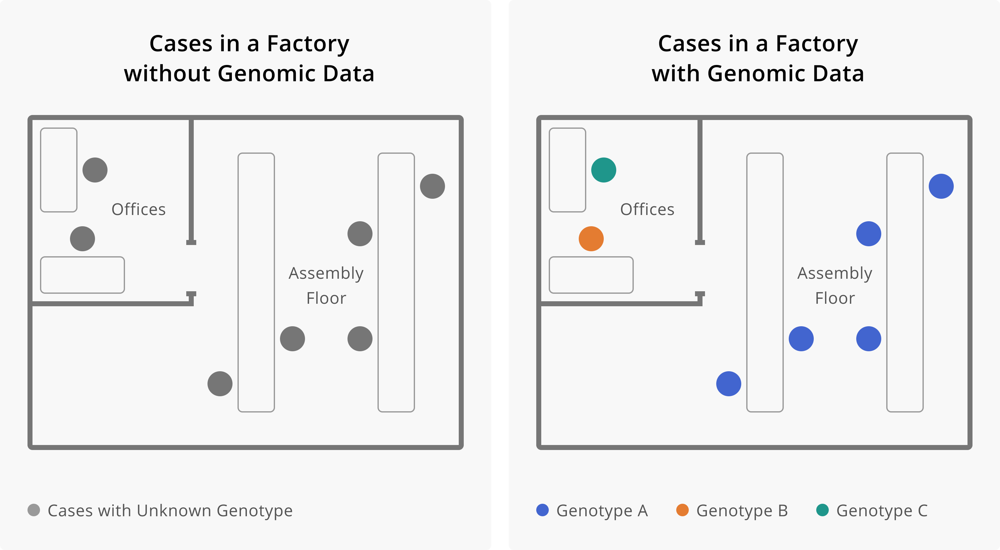
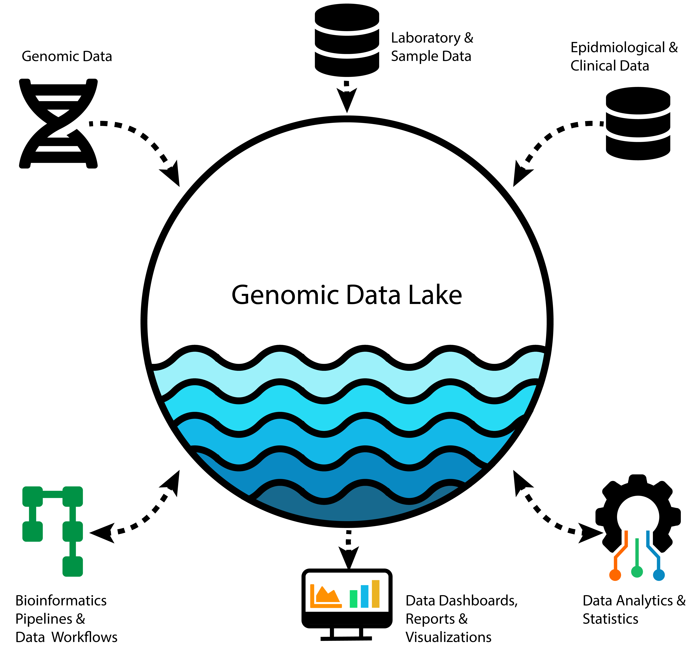
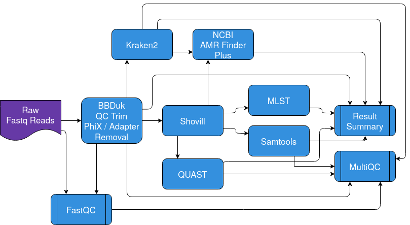
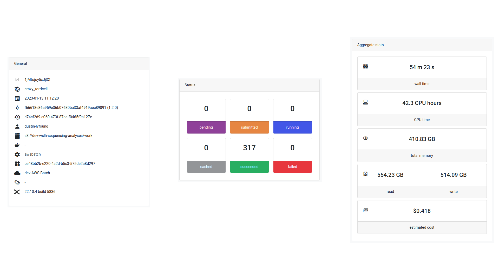
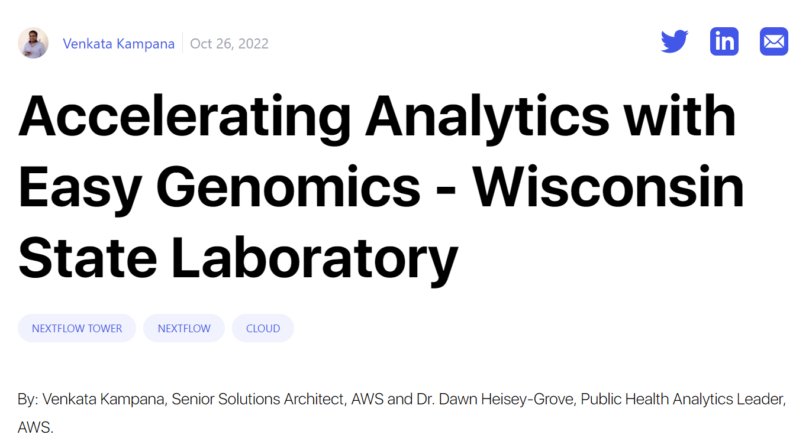
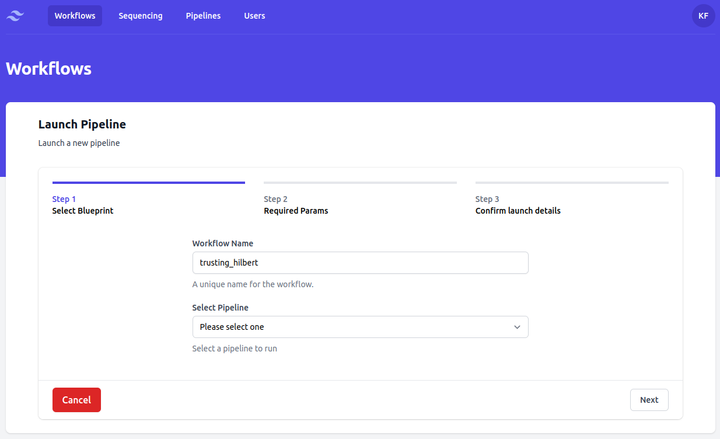

Advancing Data Strategies for Tracking Infectious Diseases
Kelsey Florek, PhD, MPH Senior Genomics and Data Scientist Wisconsin State Laboratory of Hygiene June 6, 2024
Slides live at:
www.k-florek.net/talks
www.k-florek.net/talks
Next Generation Sequencing for Infectious Disease Surveillance
What is Next Generation Sequencing?
Sanger Sequencing

Next Generation Sequencing (Illumina)


High-throughput requires advanced analytics (Nextseq 2000)
- 30,000,000,000 ATGC's generated per sequencing run
- 40,000 - 150,000 words in a novel
- average word length in English is 4.79
- one sequencing run would generate 62,000 novels with 100,000 words each

Anatomy of a Bioinformatics Workflow

include { SAMPLESHEET_CHECK } from '../../modules/local/samplesheet_check'
workflow INPUT_CHECK {
take:
samplesheet // file: /path/to/samplesheet.csv
main:
SAMPLESHEET_CHECK ( samplesheet )
.csv
.splitCsv ( header:true, sep:',' )
.map { create_fasta_channel(it) }
.set { reads }
emit:
// channel: [ val(meta), [ path_to_reads ] ]
reads
// channel: [ samplesheet.valid.csv ]
csv = SAMPLESHEET_CHECK.out.csv
// channel: [ versions.yml ]
versions = SAMPLESHEET_CHECK.out.versions
}
// Function to get list of [ meta, [ fasta ] ]
def create_fasta_channel(LinkedHashMap row) {
// create meta map
def meta = [:]
meta.id = row.sample
def fasta_meta = []
if (!file(row.fasta).exists()) {
exit 1
} else {
fasta_meta = [ meta, [ file(row.fasta) ] ]
}
return fasta_meta
}
Sequencing Reads
@M05192:295:000000000-K6N36:1:1101:9502:1212 1:N:0:NAGCGCTC+NCGTAAGA
GCGTTACATGAGGCTTATACTGAAACATTGCCTAATCCCGCCCGGTGGAAAGCTAAAAANTCCTNTGAACTGCNGGGCTATTCAGAAGNNNN
+
CCCCCGGGGGGGGGGGGGGGGGGGGGGGGGGGGFF@@FGGGGGGGGGGGGGGDGGGGFG#:C@F#:@FGGGGG#:C@FFFGGGAFGF?####
@M05192:295:000000000-K6N36:1:1101:13064:1213 1:N:0:NAGCGCTC+NCGTAAGA
TAGTGGCACTGTTTGACCATCAGCAACGCATTGGTGAACTGATGCCGGAGCGGCGTTTTNACNANGCACGTCGNCAGCAAATGATGGANNNNNNNNNNNN
+
CCCCCGGGGGGGGGGGGGGGGGGGGGGGGGGGGGGGGGGGGGGGGGGGGGGGGGGGGGG#:D#:#6CFGGGGG#:DFGGGFGG??FGG############
@M05192:295:000000000-K6N36:1:1101:18301:1216 1:N:0:NAGCGCTC+NCGTAAGA
GCCCGGTGGTGTAATTTGCGCCCTCCGAACAAAGCCACGCCACCAGGCTGGCAATCTCANACNTNGCGCCAAANCGCCGCAGAGGAATNNNNNNNN
+
CCCCCGGGGGFGGGGGGGGGGCFCGGGGGGGGGFGGGGGDGGEGGFGGGGGGGGGGGGF#:C#:#::@D@7FE#6CC#FGGGGCFGFE########
@M05192:295:000000000-K6N36:1:1102:8809:23354 1:N:0:TAGCGCTC+GCGTAAGA
GTGTTATTTGCGTGTCGCGGGCATTATGGCGGAGTACTCTCAGCCTGACGATATGATGGTGGTTTCCGCCGCCGGTAGCACCACTAACCAGTTGAT
+
CCC#CFGGFGGDECG9@FFGGGGFGG#,,C7::@F@FFGFFGGGGGGFGEEF@C,9EA9C@BBFGEF>FGECFGGF+F#C##BDFGFFFFE,??9,
@M05192:295:000000000-K6N36:1:1102:12222:23342 1:N:0:TAGCGCTC+GCGTAAGA
AAGCTAACCGATGCGGATAATGCCGCCGATGGCATTTTTTTCCCCGCCCTTGAGCAAAATATGATGGGTGCGGTGTTAATTAACGAAAATGATGAAGT
+
CCCCCGGGGGGGGGGGGGGGGGGGGGGGGGGGGGGGGGGGGGGGGGGGGGGGGGGGGGGGGGGCFGGGGGGGGGGGGFGCEFGGGGGGGGGGGGGGEF
@M05192:295:000000000-K6N36:1:1102:17996:23344 1:N:0:TAGCGCTC+GCGTAAGA
GAGCAGGATAAAACCTACAAAATTACAGTTCTGCATACCAATGATCATCATGGGCATTTTTGGCGCAATGAATATGGCGAATATGGTCTGGCG
+
CCCCCGGGGGGGGGGGGGGGGGGGGGGGGGGGGGGGGGGGGGGGGGGGGGGGGGGGGGGGGGGGGGGDGGGGGGGGGGGGGGGGGGFGGGGGG
Phylogenetic Tree
WSLH CDD Bioinformatic Workflows
- Spriggan
- AR Report Generator
- SPNTypeID
Public Health Application of
Infectious Disease Genomics
- Pathogen Surveillance
- trends
- prioritization and risk assessment
- early warning system
- Outbreak Response
- source tracking
- containment
- risk assessment
Application of Genomic Data to Outbreaks
Application of Genomic Data to Surveillance

SARS-CoV-2 Variant Waves in WI

SARS-CoV-2 Variant Waves in WI

Genomics provides contextual details
Pathogen Surveillance: SARS-CoV-2
SARS-CoV-2 Wastewater
SARS-CoV-2 Clinical
Advancing Genomics in the Cloud
What is the cloud?

Managing a growing data infrastructure
Bioinformatics Workflow
Nextflow

Sequencing Analysis Infrastructure

Sequencing Analysis Infrastructure
https://dataportal.slh.wisc.edu/
Easy Genomics
Easy Genomics
Whats next?
Pathogen Genomic Data Needs Context!
Connect data systems across Public Health
enabling near realtime insights on infectious diseases
enabling near realtime insights on infectious diseases
Sequencing Data Infrastructure